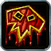
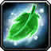
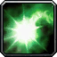
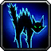
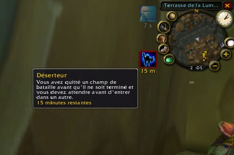
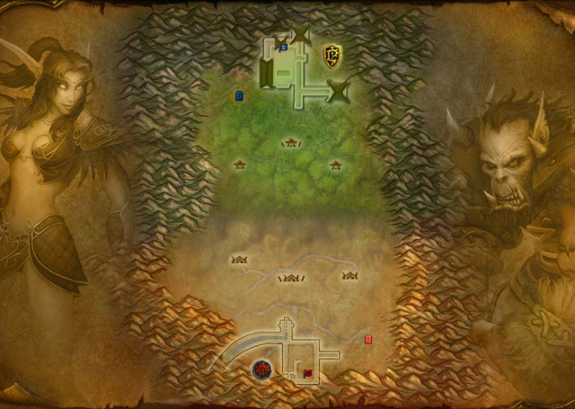
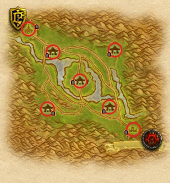
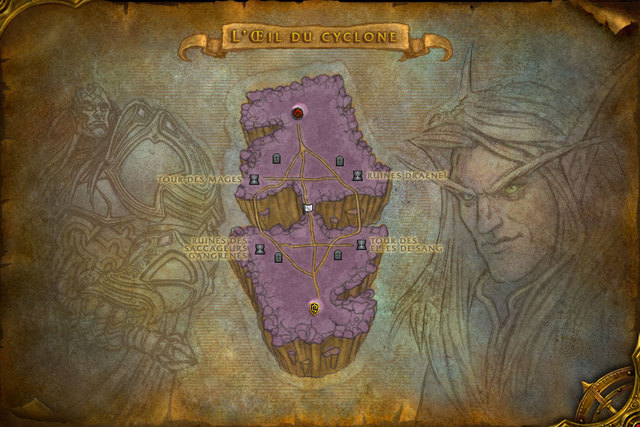
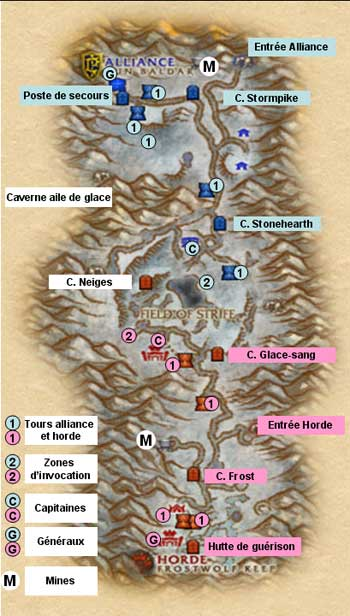

Améliorations en champs de bataille
Les buffs
Bien que les champs de bataille soit à différents endroit, on peut y trouver dans chacuns d'eux un nombre d'amélioration qui peuvent aider à tout moment.
Ces améliorations ont une apparence de coffres au trésor débordants avec icônes rayonnantes planant au-dessus d'eux.
Ces buffs peuvent être acquis en se déplaçant sur eux, accordant au joueur un effet provisoire.
Une fois le buff consommé, un autre coffre ré-apparaîtra après peu de temps.
Quelques emplacements font apparaître seulement un type spécifique de buffs, tandis que d'autres feront apparaître un buff aléatoire à chaque fois.
Berserker :
Augmente tous les dégâts causés de 30% et augmente tous les dégâts subis de 10%. Augmente aussi la taille du personnage et accorde un effet visuel flambant aux mains.
Durée de 1 minute. Le pouvoir ressemble à un crâne criant dans un coffre.
Restauration :
Rétablit la santé et mana du joueur de 10% par seconde, jusqu'à 100%. Ajoute aussi un effet visuel du sort rétablissement des druides au joueur.
Durée de 10 secondes. Subir des dégâts annulera l'effet.
Ce pouvoir ressemble à une grande feuille verte dans un coffre.
Vitesse :
Augmente la vitesse de course et de nage de 100% pendant 10 secondes. Extrêmement utile pour des transporteurs de drapeau et ceux cherchant à s'échapper.
Notez que ça n'augmente pas la vitesse de la monture.
Ce pouvoir ressemble une grosse botte très impressionnante dans un coffre.
De gauche vers la droite :
Vitesse (ou Speed), Berserker (ou Berzerking) et Restauration.
 Haut de page
Haut de page
Déserteur de champs de bataille
Le débuff déserteur 
Quitter un champ de bataille avant son achèvement vous fera bénéficier de la régression (Débuffs) "Déserteur", empêchant le joueur d'entrer dans un champ de bataille pour une durée de 15 minutes.
Ceci à pour but de décourager les joueurs d'abandonner les champs de bataille juste parce que leur équipe est en train de perdre (rage quit).
Quitter un bg (champ de bataille) pour entrer dans une autre zone PvP n'applique pas le débuff Déserteur.
Si des joueurs sont absent(AFK) 5 minutes, ils seront automatiquement enlevés du champ de bataille, et auront le débuff Déserteur.
Vous pouvez signaler un joueur inactif en cliquant droit sur son portrait et en choisissant "Signaler absent".
Quand assez de report seront enregistrés, le joueur absent aura un débuff qui lui empêchera de gagner de l'honneur ou des marques tant que ce débuff est actif. Ce debuff s'enlevera aussitôt que le joueur s'engagera en combat.
Ce système est souvent abusé, car parfois un joueur peut avoir de bonnes raisons à ne pas être en combat, par exemple quand il défend.
Démonstration :

Goulet des Chanteguerres [70]
Présentation
Dans le goulet des Chanteguerres, deux camps se battent pour capturer le drapeau adverse.
Chaque équipe tente de récupérer le drapeau de l’équipe adverse (situé dans une base en hauteur probablement bien défendue) et de le rapporter dans sa propre base pour le « capturer ».
Tout au long de la bataille, vous devez également vaincre ou éviter les forces ennemies cherchant à vous barrer la route et à reprendre le drapeau.
Il faut que l'équipe adverse ne détienne pas votre drapeau pour pouvoir "capturer" le drapeau adverse.
La première équipe à capturer le drapeau ennemi trois fois pendant la partie l’emporte.
Un Goulet est composé de 10 joueurs maximum.

Stratégie
Le Drapeau :
Le but du jeu est de capturer le drapeau adverse et de le ramener dans son camp. Il faut que le drapeau d'une équipe soit à sa base pour que cette équipe puisse ramener le drapeau adverse. Si le drapeau est ramené, l'équipe marque un point. La première équipe à marquer trois points gagne le match.
Il arrive que les deux drapeaux soient capturés, aucune équipe ne peut alors marquer. Il faut alors impérativement trouver le porteur d'un des drapeaux et le lui faire lâcher (en clair le tuer, mais il peut aussi le laisser tomber pour se défendre).
Pour capturer le drapeau adverse, il faut passer toutes leurs lignes de défenses, arriver près du drapeau, et faire un clic-droit dessus. Il faut ensuite le ramener dans son camp. Le porteur du drapeau laisse une traînée derrière lui ce qui permet de facilement le localiser, il ne peut pas invoquer de monture. De plus, il est possible de voir où se trouve le porteur de son camp sur la carte du champ de bataille.
Le drapeau lorsqu'il est prit est accroché au dos du personnage, il apparait sous forme d'un buff qu'il est possible d'annuler par un simple clic droit et qui permet éventuellement de passer le drapeau à un coéquipier plus résistant et/ou plus rapide.
Les flags quand ils sont prit dans une base comme dans l'autre apparaissent sur la map au bout de 45 secondes (raccourci "m" ou "shift+m" de mémoire, pour afficher la minimap).
Si le porteur du drapeau ennemi est tué, le drapeau tombe par terre. Les ennemis peuvent le ramasser. En revanche, si le drapeau est touché par un membre de son camp, le drapeau sera automatiquement téléporté à son point de départ.
La Tactique :
Explication : attention de ne jamais opter pour une tactique tel que "la moitié en def, l'autre moitié en attaque", c'est souvent ce que proposent les noobs et c'est la pire chose à faire puisqu'en cas de rush adverse, on se trouve écrasé par le nombre 5c10 en défense et 5c10 en attaque, un flag perdu d'emblée.
La stratégie la plus efficace, c'est le Bus : le raid se place en formation serrée et se déplace d'un bout à l'autre du champs de bataille avec le drapeau ennemi, les dps forment un rempart autour du porteur du drapeau et des healers.
Les membres doivent être solidaire, on ne laisse personne derrière, sans quoi le bus s'affaiblit, diminuant du même coup les chances de réussite.
Phase 1 : s'emparer du drapeau ennemi.
En attaque tout le monde est stacké, en monture de préférence ou à pied au besoin pour protéger le bus et ses camarades, on se déplace le plus vite possible mais sans jamais laisser personne derrière et on élimine les obstacles un par un. On laisse le tank prendre le flag (full rési, en plaque si possible, un War ou Pala avec un bouclier de préférence).
Phase 2 :
protéger le porteur de drapeau de sa faction et tuer celui des adversaires.
Au retour on récupère notre propre drapeau tous ensemble, le porteur ne doit évidemment pas rester en première ligne, juste légèrement à l'arrière du bus en retrait et avec ses healers).
Si tout le monde applique cette tactiques bien comme il faut, sans se disperser, la victoire est quasiment assurée, le seul risque serait que l'ennemi exécute la même techniques et soit supérieur au combat sur la récupération du drapeau.
Nb : on peut aussi laisser un rogue seul ou en duo avec un autre fufu (Rogue DroodHeal) en défense pour éviter qu'un ally solo s'empare du flag, dans ce cas il pourra aussi servir de soutiens quand le bus est proche de la base. Il pourra Sap et chainstun le porteur ennemi pour ralentir la progression adverse mais devra mieux rester en fufu en cas de rush ally trop important, il faudra alors qu'il prenne de l'avance et vienne en soutiens au bus de sa faction.
Si la phase(2) de récupération n'aboutit pas ...
Pour le cas où les porteurs des drapeaux de chaque faction parviennent chacun à atteindre leurs bases respectives, le goulet risque bien souvent de se prolonger un bon moment.
Quand les deux drapeaux sont détenus, les porteurs de drapeau subissent 50% de dégâts en plus après environ 10 minutes et 100% de dégâts en plus après environ 15 minutes, les chances de perdre la manche sont donc de 50/50.
On doit donc adopter une tactique différente :
- Soit tous les joueurs vont en défense, cela afin d'épuiser l'ennemi et donc de profiter d'un retournement de situation. Cette technique n'est pas infaillible et ne durera qu'un temps.
- Soit on reforme un bus (et donc on s'attend au cimetière, au lieu d'aller se faire farm à tour de rôle comme des péons), en laissant un fat heal avec le porteur du flag et un dps (il sera bon de confier le drapeau à un druide qui pourra faire courir les ennemis et se défaire des éventuels ralentissement en changeant de forme)
A savoir : si jamais la faction adverse se place en bas de notre cimetière et nous farm à notre résurrection. Le comportement qu'on voit le plus souvent, c'est que les mecs retournent se faire tuer à tour de rôle...
L'idéal est donc d'aller dans la salle du drapeau et de couvrir le flag en attendant ses camarades et ainsi pouvoir reformer le bus.
2nd Tactique (attention, il faut bien avoir jauger les forces adverses avant de la mettre en pratique, on préférera avant tout la premier technique et si on ne ressent pas de difficulté, appliquer celle-ci)
Il existe également une strat intéressante mais qui est viable seulement si les adversaires ont une mauvaise compo, lorsqu'ils manquent de healers et sont mal coordonnés.
Le camp cimetière :
Un minimum de 6 joueurs accompagné d'un soigneur vont au cimetière ennemi. Cette technique n'est efficace que si elle comporte des soigneurs, cela permet d'éliminer l'ennemi dés sa résurrection et si bien utilisée, bloque tout moyen d'attaque; les joueurs ennemi partit en attaque décident de revenir aider(ce qu'il ne faut pas faire) et vous êtes assurés de prendre le drapeau ennemi a votre guise pendant que vos alliés font une boucherie.
Bonne bataille !
Bassin d'Arathi [70]
Présentation
Stratégiquement parlant, la bataille du bassin Arathi évoque un peu le jeu du « Roi de la montagne ».
Votre équipe doit foncer en direction de cinq points stratégiques à capturer et à défendre… des « points névralgiques », en termes de ressources
Vous devez vous emparer d’un nombre de points stratégiques supérieur à celui de l’équipe adverse et défendre les lieux aussi longtemps que possible.
Plus vous contrôlez de points stratégiques, plus vous engrangez rapidement les ressources.
La première équipe arrivée à 2000 ressources gagne.
Un arathi est composé de 15 joueurs maximum.
Au cours de la bataille, il vous faudra traverser le bassin Arathi et filer d’un lieu à l’autre pour organiser sa prise ou sa défense. Pour remporter la victoire, vous devrez apprendre quand attaquer un lieu contrôlé par l’ennemi et quand défendre un point stratégique dont votre équipe s’est emparée.
Les cinq bases à contrôler sont :
La ferme (devant le camp de la horde), L’écurie (devant le camp de l’alliance), La scierie (à l’ouest), La mine d’or (à l’est) et enfin La forge (au centre).

Déroulement d’une partie :
Les deux factions commencent dans leur camp, les grilles sont fermées (comme dans la plupart des champs de bataille au début). Lorsque les grilles s’ouvrent, les joueurs se déploient sur tout la carte pour essayer de capturer les bases. Pour capturer une base il suffit de cliquer droit sur le drapeau, et attendre que la barre de “cast” se termine. Ensuite, le drapeau est “contesté” il est indiqué aux deux camps : “l'alliance a attaqué la ferme, si personne n’intervient, l'alliance s’en emparera”.
Drapeau en cours de capture par la horde à la ferme
Si personne n’intervient (donc si personne ne vient essayer de reprendre ce drapeau) il passe à l’équipe qui l’a capturée, dans le cas de cette image le drapeau passe donc au rouge et un trait de lumière rouge visible de très loin indique les drapeaux capturés par la horde. C’est là que les ressources commencent à s’accumuler, plus une base reste longtemps capturée par une faction, plus les ressources s’accumulent.
A savoir :
- Une base rapporte des ressources à partir de quand le drapeau passe au bleu (ou au rouge pour la horde).
- La forge est le lieu du “PvP Middle”, c’est souvent là que se regroupent les gens, c’est difficile à défendre et les ennemis arrivent de tout côté (par l’eau, par les routes).
- Lorsqu’une base est capturée par la faction adverse, si vous êtes en fantôme attendant d’être réssucité vous serez téléporté à la base que votre faction possède (et si elle n’en possède pas dans le cimeterre du camp de base).
- Le camp de base n’est pas une base à capturer, c’est juste un point de démarrage (et de camp).
- Les points de ressources accumulés sont indiqués en haut de l’écran ainsi que le nombre de bases capturées et possédées
- Chaque drapeau capturé, défendu etc vous rapporte de la réputation pour Arathor (alliance) ou les profanateurs (horde)
- Un trait de lumière visible au loin indique à qui appartient telle ou telle base (rouge pour la horde, bleu pour l’alliance, blanc pour “neutre”).
Stratégie
La première chose à savoir pour gagner le Bassin d’Arathi c’est la communication ainsi que la défense. Pour accumuler des ressources il faut savoir garder une base, il faut donc que quelques personnes restent en défense, plus longtemps vous gardez cette base, plus vous avez de chance de gagner le Bg.
Lorsque vous capturez une base il faut qu’une ou deux personnes restent en défense près du drapeau (si possible avec détection des humanoïdes) lorsqu’un groupe d’ennemis s’approchent de la base, ces personnes indiquent sur le canal du champ de bataille (/cb) que la base va être attaquée, et la défendent comme ils peuvent. Surtout n’oubliez pas de dire à votre faction que vous avez besoin d’aide pour telle ou telle base !
Toucher un ennemi essayant de prendre une base lui fait perdre du temps et le fait décast (ce qui permet de gagner quelques ressources supplémentaires).
La première chose à mettre en place c’est de vous assurer dès le début d’avoir deux bases fixes très bien défendues. Je vous conseille de choisir par exemple Scierie + ferme (si vous êtes de la horde) ou écurie (si vous êtes de l’alliance). Une fois cette base solide acquise et que des joueurs restent bien en défense (deux ou trois suffisent surtout s’ils communiquent bien au reste du raid de bg) le reste des troupes peut alors s’atteler à capturer/reprendre des bases prises par l’ennemi. Pourquoi cette stratégie ? Vous assurer deux bases acquises vous apportera pas mal de points de ressources pour gagner le bg, il ne faut surtout pas les perdre et aller titiller l’ennemi sur d’autres bases.
Stratégie du bg parfait:
Cette stratégie n’est en général possible que lorsque votre équipe est en surnombre. Capturez toutes les bases dès le début et tuez à vue les quelques joueurs ennemis qui se présentent. Ils seront alors coincés dans la base de départ (puisqu’il n’auront plus de cimeterre à part celui du début). A vous de les coincer là dedans et de n’en laisser passer aucun (facile il y a des grilles). Donc si vous avez toutes les bases, et qu’elles sont défendues par quelques personnes, prenez un groupe de 5-6 personnes pour bloquer le cimeterre restant à l’ennemi (ça nécessite une bonne coordination), ensuite une fois que vous êtes certains que tout le monde est bien là rameutez tout le monde et campez les.
Bonne bataille !
L'Oeil du cyclone [70]
Présentation
L'Œil du cyclone combine des styles de JcJ déjà vus auparavant. Ainsi il rappelle la prise des objectifs stratégiques extérieurs (comme ceux que l'on pouvait trouver dans les Maleterres de l'est), le goulet des Chanteguerres (pour la capture de drapeau) et le basin d'Arathi (pour les points gagnés lorsque l'on prend une structure).
Le principal objectif pour chaque équipe est de récupérer autant de tours que possible puis de se battre pour prendre le drapeau, avant de le ramener dans l'une des bases.
Chaque faction commence dans un coin de la carte (au nord pour l'Alliance, au sud pour la Horde) sur des plates-formes situées en hauteur. Lorsqu'une faction ne possède plus de points de contrôle (donc plus de cimetière), elle réapparaît à cet endroit. Ce système permet d'éviter le "corpse camping" puisqu'il n'est pas possible d'accéder depuis le sol à ces plates-formes. Les ennemis ne peuvent donc pas venir vous attaquer à cet endroit. En pratique, vous serez quand même "campé", mais en bas... Faites d'ailleurs attention lorsque le champ de bataille débute. Ne sautez pas tout droit ! La chute peut-être douloureuse et surtout désavantageuse pour la suite (utilisez chute lente pour les mages, les parachutes pour les ingénieurs, lévitation pour les pretres,ou faites gaffe).
Un cyclone est composé de 15 joueurs maximum.
Fonctionnement
La capture des tours fonctionne sur le même système que celui des Maleterres de l'est. Plus il y a de monde dans la zone, plus la capture est rapide. S'il y a autant de joueurs Alliance que Horde, la barre de progression de la capture ne bouge pas.
En début de partie, toutes les tours sont neutres. Pour en récupérer une à un ennemi, il faut donc se battre à proximité du drapeau, suffisamment longtemps, tout en gardant la supériorité numérique. Ou alors tuer les ennemis afin que la barre de progression avance suffisamment rapidement pour récupérer la tour avant qu'ils ne réapparaissent. Et si les ennemis reviennent, il faut les tenir à distance.
Le fait de posséder une tour octroie un cimetière à proximité à ses détenteurs. Il est fréquent de voir le combat se déplacer au fur et à mesure des réapparitions vers ce dernier. Si vous avez l'avantage sur votre adversaire, cela vous permet de le dominer plus facilement. Mais cela ne vous permet pas de prendre possession de la tour puisque le cimetière est situé trop loin par rapport à la zone de capture.
Pour des questions pratiques et stratégiques, les quatre tours sont toutes différentes. Du côté horde, sur la droite, nous avons la tour des elfes de sang et sur la gauche la tour du saccageur. Côté Alliance, nous avons sur la droite la tour des mages, et sur la gauche la tour draeneï.
Chaque tour que vous possédez vous rapporte des points, suivant ce schéma :
- 1 tour = 1 point par période (2s)
- 2 tour = 2 points par période (2s)
- 3 tour = 5 points par période (2s)
- 4 tour = 10 points par période (2s)
Autre élément important de ce champ de bataille : un drapeau situé en plein milieu de la carte, accessible par un petit chemin surplombant le vide. Il faut dix secondes pour le récupérer avant de l'amener dans l'une de vos bases. Une traînée verte vous suit pour indiquer le chemin que vous avez pris (exactement comme dans le goulet) et vous apparaissez sur la carte pour tout le monde.
Pour récupérer les points associés à la capture, il suffit de vous rendre sur le drapeau de l'une de vos tours.
Vous gagnez des points en fonction du nombre de tour que vous possédez, suivant ce modèle :
- 1 tour = 75 points
- 2 tour = 85 points
- 3 tour = 100 points
- 4 tour = 500 points
Dernier point important, vous constaterez, comme pour les autres champs de bataille, que des petits bonus vous attendent dans chaque tour (Berseker, Restauration, Vitesse). Utilisez-les à bon escient.
Stratégie
Il y a essentiellement deux stratégies utilisables dans l'Œil du cyclone. La première consiste à faire mainmise sur la zone du drapeau, au centre, tout en conservant deux tours (idéalement placées du même côté). Puis, à chaque fois que le drapeau réapparait, il faut le ramener. Cela permet de prendre l'avantage sur l'ennemi qui possède lui aussi deux tours. Cette technique fonctionne si votre ennemi joue le jeu et essaye de récupérer le drapeau. S'il se décide à prendre vos tours, il faudra que les joueurs en défense préviennent suffisamment tôt pour que vous puissiez envoyez des renforts. Dans le cas contraire, vous devrez récupérer votre tour au plus vite et, si besoin, modifier votre stratégie en adoptant celle ci-dessous.
La seconde méthode consiste à s'approprier trois tours et à les conserver, sans allouer de joueur pour aller prendre le drapeau. Il est mathématiquement impossible pour une équipe ayant une seule tour de gagner, même si elle récupère tous les drapeaux. Vous ne craignez donc rien ! Il peut quand même être intéressant, en début de partie, d'envoyer une seule personne chercher le drapeau. Cela au cas où votre adversaire n'enverrait personne. Attendez de préférence que toutes les tours pour lesquelles votre faction se bat soient capturées. Vous gagnerez plus de points.
Stratégie de bg parfait
Rien de plus simple lorsque que vous êtes en surnombre. Mettez vous d'accord pour la capture des deux premières bases (2 joueurs par base), 1 joueur pour le flag, le reste va vers les 2 dernières bases pour tuer les éventuels ennemis et prendre les bases. Ensuite, allez camper les A2 ou H2 en dessous de leur zone de départ pour les empecher de descendre.
Généralement lorsqu'il y a surnombre, les ennemis ne risquent pas leur vie.
Bonne bataille !
Vallée d'Altérac [61-70]
Présentation
Pour remporter la victoire dans la vallée d’Alterac, vous devez vous emparer de différents objectifs (comme des tours ou des bunkers) et tuer des personnages-joueurs ennemis ainsi que des capitaines PNJ, afin de faire tomber les points de renfort de l’adversaire à zéro. Parvenir à tuer le général de la faction adverse (un défi de taille) entraîne une victoire instantanée… mais les généraux sont protégés par des légions de soldats. Il vous faudra donc prendre des tours afin de vous assurer que l’ennemi est suffisamment affaibli. Vous devrez également vous emparer de cimetières pour ne pas perdre votre emprise sur les zones conquises.
Contrairement aux autres champs de bataille, la vallée d’Alterac est une petite province à elle seule… attendez-vous à y croiser des créatures hostiles comme des troggs et des loups, que vous pouvez attaquer (et qui peuvent vous attaquer) tandis que vous traversez le champ de bataille.
Légende :
Stormpike = Foudrepique
Frostwolf = Loup de givre

Fonctionnement
1. Aperçu général :
Les nains Stormpike et les orques Frostwolf s’affrontent pour le contrôle de la vallée … le premier camp à tuer le Général ennemi (Vandar stormpike pour les nains et Drek’Thar pour les orques) gagne la bataille et les gros bonus d’honneur et de réputation.
Afin de tuer le général ennemi, il convient de progresser vers sa base en s’assurant le contrôle des tours, cimetières et fortins qui facilitent l’assaut final (tuer le général ennemi directement est quasi impossible)
2. Les objectifs stratégiques :
Chaque objectif stratégique contrôlé donne un bonus d’honneur à la fin de la partie. Chaque officier ennemi tué donne un bonus d’honneur à l’autre camp au moment de son élimination (que vous soyez proches ou pas).
Les cimetières
Ce sont les objectifs les plus importants dans la mesure où c’est là que vous ressucitez après un décès aussi tragique que fréquent, dans le cimetière contrôlé le plus proche. Chaque camp a 3 cimetières capturables et il y a un cimetière initialement neutre au centre. A cela s’ajoute le cimetière de votre tunnel de départ, imprenable.
Quand vous cliquez sur la bannière d’un cimetière sans être interrompu, vous capturez le cimetière qui devient neutre si l’ennemi le contrôlait auparavant, ou repasse sous votre contrôle si vous le contrôliez auparavant. Personne ne ressucite dans un cimetière neutre mais au bout de quelques minutes (4 minutes), il passe sous le contrôle du dernier camp à l’avoir capturé. Il faut donc poster des gardes dans un cimetière que l’on vient de capturer jusqu’à ce qu’il soit entièrement contrôlé.
Les tours (appelées fortins pour l’alliance, à ne pas confondre avec les forts) :
Garnies d’archers, elles offrent un net avantage défensif. Tant qu’elles ne sont pas détruites, des archers viennent en renfort remplacer les archers tués. On les capture comme des cimetières à l’exception du fait qu’une fois la capture validée (au bout de 4 minutes), la tour est définitivement détruite.
Chaque tour ennemie détruite fait apparaître un défenseur de votre général (maréchal ou maître de guerre) et élimine un défenseur du général ennemi.
Ces défenseurs sont TRES dangereux (cleave à 1500, chargent les soigneurs), il est donc vital de s’assurer de la destruction des tours ennemies en y postant des gardes depuis leur capture jusqu’à leur destruction.
Les forts :
Il y en a un par camp, qui héberge le capitaine de chaque camp (Galvangar et Balinda stonehearth). Ce capitaine lance un sort d’amélioration périodique sur les troupes de son camp (+20% de points de vie), il est donc utile de le tuer, ce qui détruit le fort.
Les mines :
Objectif primaire, les 2 mines (gouffrefer et froidedent) sont initialement contrôlées par des forces neutres. Contrôler une mine rapporte des point d’honneur à la fin de la partie et permet de rassembler des fournitures qui, en grand nombre, permettent de lancer une attaque terrestre (un groupe de PNJ élite). Elles permettent aussi de donner des renforts en plus (1 renfort toutes les 4 minutes il me semble). On peut s’emparer d’une mine en solo en étant décemment équipé ; il suffit de se frayer un chemin jusqu’au chef de la mine et de l’abattre. A ce moment, des mineurs de votre camp apparaissent et font le ménage …
Les Officiers :
Les lieutenants patrouillent ou gardent des postes fixes (2 devant le fort de Galvangar par exemple). Les capitaines sont dans leur fort. Il y a un commandant par tour et cimetière (qui ne revient pas une fois éliminé) et bien sûr le général ennemi dans sa base, entouré d’un nombre de maréchaux ou maîtres de guerre variable selon le nombre de tours détruites par chaque camp … Chacun de ces PNJ donne un bonus d’honneur au moment de sa mort.
3. Les quètes :
Les quêtes d’Alterac permettent de donner à votre camp un avantage tactique et vous font gagner de la réputation auprès des nains foudrepique pour l'alliance ou le clan loup-de-givre pour la horde. Une fois exalté vous pouvez acheter un objet qui vous permet de vous téléporter vers votre base.
Les morceaux d’armure (pas mal pour se faire de la réput)
Quête répétable qui consiste à ramener 20 morceaux d’armure trouvés sur les corps de vos ennemis (en plus grande quantité sur les PJ) au forgeron de votre base. Votre armure s’améliore de 10% pour 30 minutes quand vous le faites. Une fois qu’un nombre suffisant de bouts d’armure ont été ramenés, l’armurier lance un sort d’amélioration de 2min et les PNJ de votre camp deviennent plus dangereux de manière permanente.
Les béliers
2 quêtes : ramener des béliers (ou loups pour la horde) et des harnais au maître de cavalerie. Les béliers ou loups sont à charmer avec un harnais fourni dans la quête. Une fois assez de béliers ou de loups ramenés, une cavalerie élite apparaît et commence à attaquer l’ennemi (avoir une réputation suffisante auprès de stormpike ou frostwolf ouvre plus d’options en vue de la diriger).
Les fournitures des mines
L’intendant Stormpike ou frostwolf vous demande de lui ramener 10 caisses de fournitures de l’une ou l’autre des 2 mines. Il vaut mieux s’assurer du contrôle des mines avant de ramasser ces caisses. Une fois qu’une certaine quantité de caisses a été ramenée, l’intendant donne à ceux disposant d’une réputation suffisante un document leur permettant de lancer une attaque terrestre (groupe de PNJ élite).
Les cristaux des druides
Les cristaux ramassés sur les corps de vos adversaires sont à ramener aux druides. Une fois suffisamment de cristaux ramenés, les druides (élite) se mettent en mouvement vers le centre de la carte (en attaquant les ennemis au passage). S’ils y parviennent en vie, ils attendent que 10 assistants les rejoignent pour cliquer sur le cercle d’invocation pendant 2 minutes et ainsi invoquer IVUS, un treant (worldboss) de l’Alliance. Ce monstre offre un gros avantage offensif mais il est lent à s’ébranler : il reste 10 minutes au centre de la carte avant de se mettre en marche vers la base ennemie. A ce moment, il détruit tout sur son passage. Les hordeux ont une quête symétrique en vue d’invoquer LOKH’OLAR, leur élémentaire géant. Interrompre l’invocation est facile, la rendre impossible nécessite de tuer au moins un des chamans (PNJs élite).
Les médaillons et chefs d’escadrille
Les chefs d’escadrille sont initialement prisonniers dans les 2ème, 3ème et 4ème tours des camps adverses. Une fois libérés (il suffit de leur parler), ils courent vers la base de leur camp. S’ils y parviennent en vie, il est possible de leur rendre les médaillons ramassés sur les corps ennemis (médaillons de soldat, lieutenant ou commandant, un type de médaillon par chef d’escadrille). Une fois suffisamment de médaillons rendus, les chefs d’escadrille s’envolent vers une destination d’attaque ou de défense prédéfinie. Une autre destination plus intéressante est en option mais vous devez aller y placer une balise pour que le chef d’escadrille s’y rende.
La bannière et l’insigne stormpike/frostwolf
Quête non répétable obtenue à l’extérieur d’Alterac, devant l’entrée : Il s’agit d’aller chercher une bannière au fond de la caverne de l’aile de glace (voir carte), gardée par des harpies. La quête est faisable seul. Une fois la bannière rapportée, vous recevez un bijou qui vous permet de vous téléporter à volonté jusq’au cœur de votre base, fort pratique pour revenir en défense ou rapporter vos objets de quête. Ce bijou s’améliore avec votre réputation jusqu’à devenir épique (résistance au froid, régénération des pdv et 2% d’esquive).
Les captures d’objectifs
La capture des objectifs stratégiques constitue une quête non répétable.
Récompense pour une victoire en Alterac
Votre première victoire en Alterac vous permettra d’aller chercher un fort bel objet de récompense dans le Donjon de votre base, auprès d’un PNJ situé non loin de votre général.
Stratégie
4. Les tactiques :
L’attaque
Il est possible de gagner (ou de perdre) une partie d’Alterac en 15-20 minutes si chacun des camps met sa priorité à l’attaque.
Pour ce faire il convient de :
- Placer au moins 25 joueurs en attaque,
- Laisser 2 défenseurs par tour ennemie capturée jusqu’à leur destruction,
- Laisser 3-4 défenseurs au dernier cimetière en attaque capturé jusqu’à validation de ce cimetière ou capture du 2ème cimetière, faire de même au deuxième cimetière jusqu’à la fin de la partie afin de garantir que la défense ne reprennent pas leur deuxième cimetière pour s’en servir comme base de harcèlement lors de l’attaque de Drek’thar / Vandar,
- Si le raid n’est pas très solide, n’attirer les maîtres de guerre en dehors du donjon ennemi qu’une fois le premier cimetière en attaque validée (sinon au moins le 2ème cimetière)
- N’attirer qu’un ou deux maîtres de guerre à la fois !! (les rabattages foireux effectués par des chasseurs flanqués de familiers niveau 51 sont la principale cause de défaite en Alterac)
- Combattre les maîtres de guerre comme des boss de raid, en gardant un œil ou une équipe sur la défense susceptibles de venir mettre leur grain de sel …
- Combattre Drek’Thar / Vandar à L’INTERIEUR DE SA FORTRESSE : Si vous avez attiré son attention, mourrez DEDANS car s’il sort, IL REGAGNE TOUTE SA VIE (2ème principale cause de défaite en Alterac). Bien sûr, il faut un bon homme de ligne (tank) et une équipe de soigneurs …
La défense
- Ne pas être plus de 10-15 en défense (à moins que vous ayez 4 heures à tuer)
- Laisser à tout prix le premier cimetière à l'autre faction pour garantir qu’ils ressucitent en attaque et pas en défense (1ère cause de parties interminables en Alterac)
- Reprendre si possible les tours alliées capturées dans le dos des ennemis
- Interdire à tout prix le franchissement du pont dans la base Alliance et le franchissement des remparts dans la base de la horde : c’est la position la plus facile à défendre et si elle tombe, c’est le début de la fin.
Les renforts
Les renforts fournis par les quêtes sont loin d’être indispensables et le temps passé à les invoquer peut même se révéler contre productif. Ils peuvent cependant se révéler utiles dans certaines situations :
- Les chefs d’escadrille demandent peu d’effort à invoquer (seulement des médaillons à rendre). Ils constituent en outre une épine dans le pied de l’adversaire, en attaque comme en défense.
- La cavalerie prend du temps et de la main d’œuvre à invoquer, elle n’est utile que pour dévérouiller une situation où vous êtes assiégé dans votre base ou si l'ennemi a pris de l’avance.
- L’infanterie invocable grâce aux mines est presque inutile vu le temps nécessaire à son invocation : ne l’utiliser que si les ennemis jouent la défense intégrale.
- Les druides : on peut lâcher les druides pour se donner de l’air en défense (ils attaquent les cimetières alliés qui ont été contrôlés et les ennemis au passage). Dans ce cas de figure, il est vraisemblable que l’invocation sera impossible (mort probable d’un druide).
Bonne bataille !